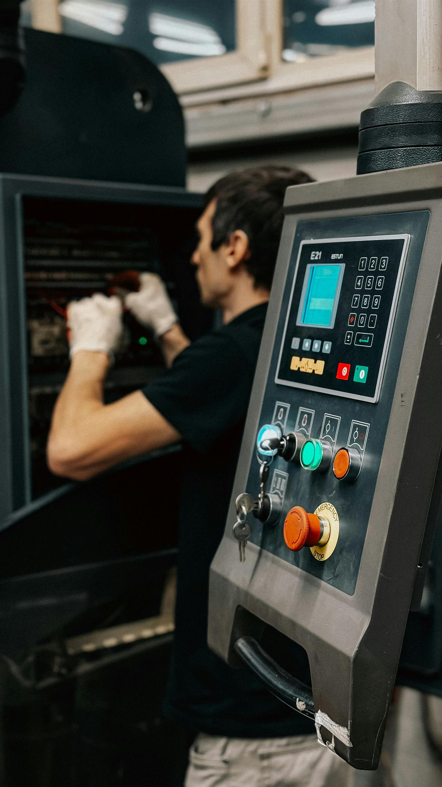
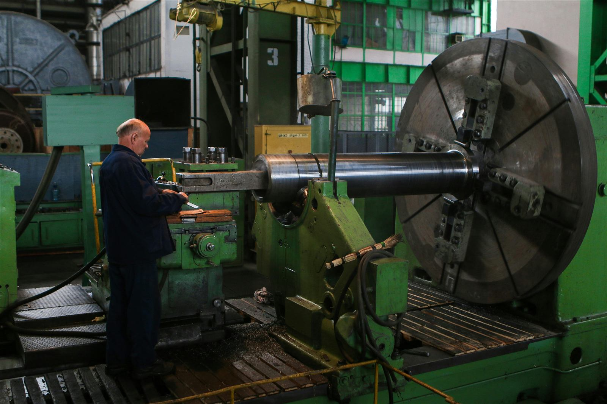
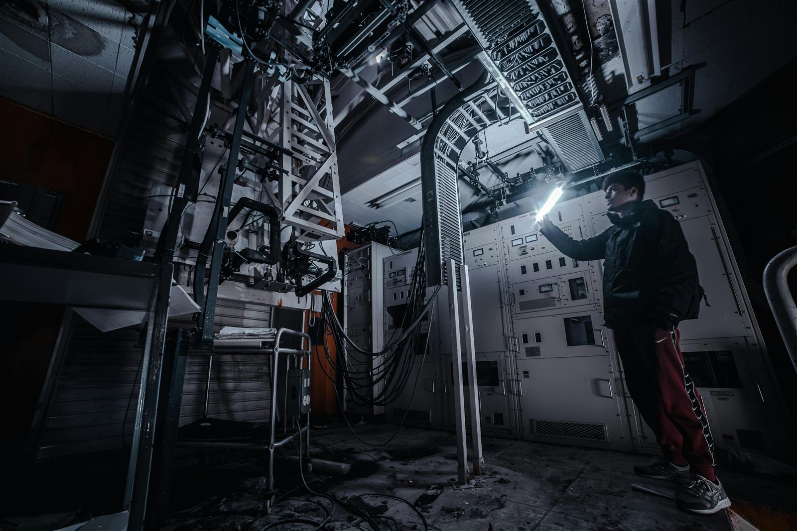

Ingenieria de mantenimiento predictivo
Monitoreo de condicion de maquinas
Soluciones de ingenieria para prevenir fallas, optimizar el mantenimiento y mejorar la confiabilidad operativa de tus equipos.
- Analisis tecnicos orientados a decisiones concretas.
- Diagnostico temprano para reducir paradas no planificadas.
- Enfoque profesional, serio y alineado a confiabilidad industrial.
Sobre BCL Ingenieria SRL
Ingenieria aplicada al rendimiento y la confiabilidad
Somos una empresa de ingenieria especializada en el monitoreo de condicion de maquinas, brindando soluciones tecnicas para detectar fallas tempranas, mejorar la disponibilidad de los equipos y reducir costos de mantenimiento.
Trabajamos con una mirada preventiva, datos claros y diagnosticos consistentes para ayudar a las areas de mantenimiento y operacion a intervenir con precision.
Monitoreo
Seguimiento del estado real de activos criticos
Diagnostico
Interpretacion tecnica para actuar antes de la falla
Confiabilidad
Mas disponibilidad, menos riesgo y mejor planificacion

Inspeccion en planta
Evaluacion del estado operativo de maquinaria critica.

Monitoreo tecnico
Control, diagnostico y lectura de condiciones en campo.
Servicios
Soluciones tecnicas para cada etapa del mantenimiento
Un portfolio enfocado en deteccion temprana, evaluacion de condiciones y soporte profesional para decisiones de mantenimiento predictivo.
Analisis de vibraciones
Medicion e interpretacion de comportamiento dinamico para identificar desbalances, desalineaciones y defectos mecanicos.
Monitoreo de condicion
Seguimiento continuo o periodico del estado de equipos para anticipar desvios operativos relevantes.
Diagnostico de fallas
Evaluacion tecnica de sintomas y causas probables para orientar acciones correctivas con criterio ingenieril.
Mantenimiento predictivo
Estrategias basadas en datos para intervenir en el momento adecuado y optimizar recursos de mantenimiento.
Inspeccion tecnica de equipos
Revision de activos criticos y relevamiento de condiciones operativas para mejorar seguridad y performance.
Informes tecnicos profesionales
Documentacion clara, accionable y orientada a responsables de mantenimiento, ingenieria y operaciones.
Beneficios
Resultados concretos para la operacion
Prevencion de paradas inesperadas
Mayor vida util de los equipos
Reduccion de costos operativos
Diagnosticos precisos
Decisiones basadas en datos
Mejora en la confiabilidad industrial
Sectores que atendemos
Aplicaciones para entornos industriales exigentes
Industria
Plantas productivas
Equipos rotativos
Sistemas electromecanicos
Maquinaria critica